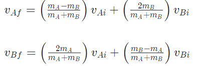

Overview of the Wind Tunnel
Here is a video showing the simulation. The velocity map shows shows the magnitude of the air velocity at that pixel location. Half way through, we switch from a velocity map to a pressure map. This represents the difference in pressure from the surrounding static pressure where red is the lowest pressure in comparison to the surroundings.
The controls for this simulation are as follows:
- W: Decrease distance beween boundary
- S: Increase distance between boundary
- Left mouse button: Print pressure and velocity out to console at that location
- Right mouse button: Spawn particle
- 1: Switch between pressure and velocity heatmaps
- 2: Toggle stream lines
- 3: Toggle directional indicators
- 4: Toggle effects of particles on surrounding air
Collision Detection
Particle-Boundry Collision
N-Body Collision
We implemented n-body collision for particles (spheres in 2D).
The algorithm follows the procedure below:
- Get all distinct intersecting pairs from the list of particles
- For each pair, applying the constraints from conservation of momentum and conservation of kinetic energy. Final velocities in each pair can be solved with the following derived equations
 - Repeat the process for the number of pairs times
Results:
HeatMap
Velocity
Lower Velocity: Blue |

Arrows / Particles
ParticlesPress 2 to toggle Particles |
ArrowsPress 3 to toggle Arrows |
Math
Navier-Stokes: Continuity Equation
Used to derive the average velocity of the fluid flow in the x-direction at every pixel. M_dot or the mass flow rate is a predefined constant. From this, we can divide by the cross sectional area to receive the average x-velocity at a particular x-location. |
Source & Sink Flow
A pressure source was used to simulate the pressure rise at the front of the ball due to the onset of oncoming air. A presssure sink was used to simulate the pressure drop across each sphere as they moved through the air. Finally, a velocity sink was implemented in the front of the ball to simulate the stagnation of air at the very front of the sphere. The shape of the sources and sinks were altered using alternate distance functions. The distance function for a simple circular source or sink is shown above. |
Velocity Interpolation
Used to adapt the 1D average velocity vector to 2D in order to adjust the flow to the shape of the tunnel's upper boundary. The vector [1, m] is a vector tangent to the tunnel's upper boundary at some particular x location. |
Pressure Drop Across Sphere
Before implementing the pressure drop in the source/sink flow, the pressure drop across the sphere was estimated to give a more realistic values. |